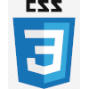
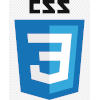

PORTIFÓLIO Rodrigo Pires Schulz
Administração
Video/Design
FullStackDev
Pós-graduação na área de administração com experiência de 10 anos na área de RH, atuando com as ferramentas da Senior Sistemas: EdfReinf, Administração de Pessoal, Ponto Eletrônico, Benefícios, eSocial. Ferramentas do dia a dia administrativo: trello e excel.
 

Experiência com produção, criação e edição de vídeos de skate, documentário, podcasts, entrevistas, programa de televisão. Passagens por outras áreas como edição de eventos, comerciais, criação de esquetes, vídeos promocionais em geral. Adobe After Effects, Adobe Premiere Pro, Edição de vídeo, Adobe Photoshop.
Estudante na StackX, tendo cursado as disciplinas Pensamento crítico, Soft Skills, Sistemas Operacionais, Estrutura organizacional, Metodologias Ágeis, Lógica de programação e Estrutura de Dados, Introdução à Programação, Organização e arquitetura de computadores, Lei Geral de Proteção de Dados, Engenharia de Requisitos e Modelagem de Software, Estrutura de dados, Modelagem de dados, SQL, Front End, Git, Github, HTML e CSS. Noções básicas das ferramentas abaixo: